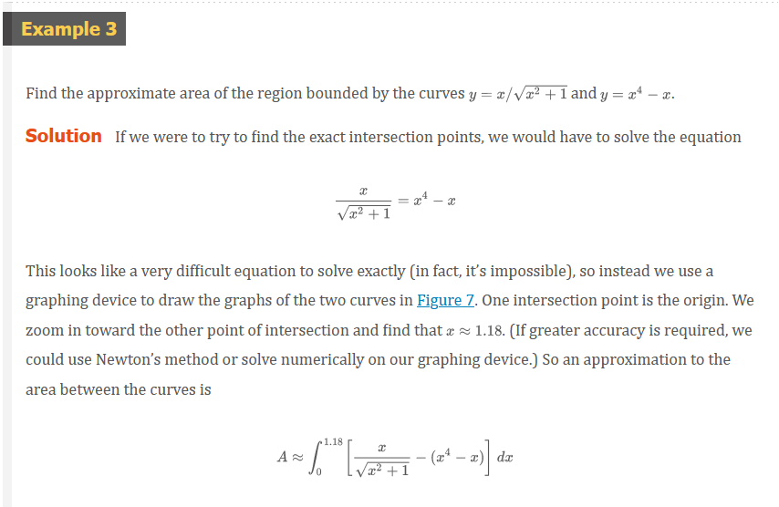
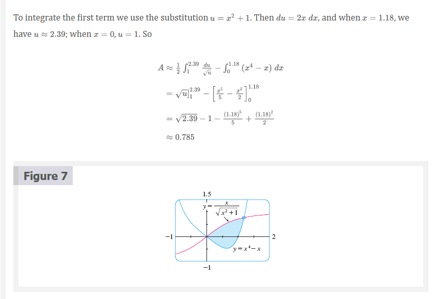
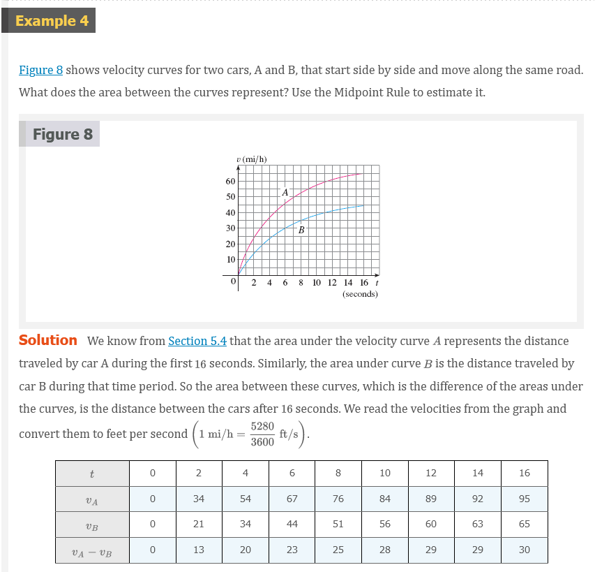
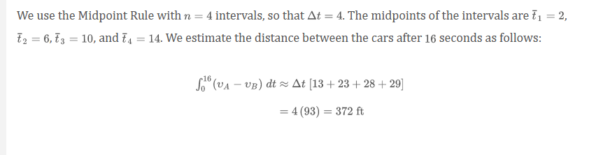
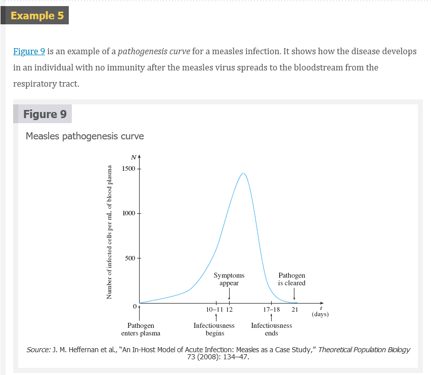
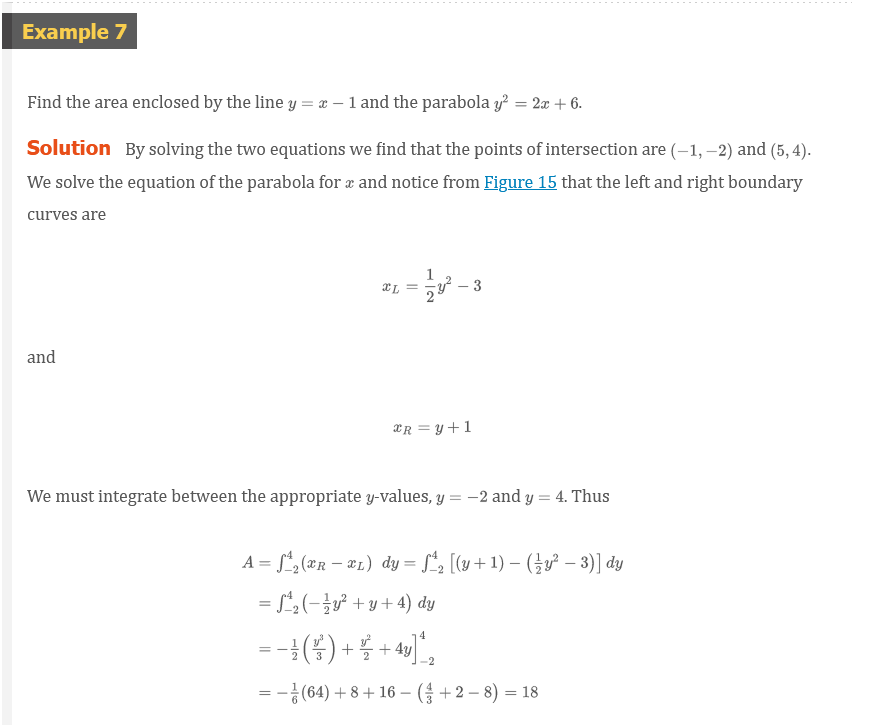

Chapter 6.1: Areas Between Curves
Areas Between Curves
In Chapter 5 we defined and calculated areas of regions that lie under the graphs of functions. Here we use integrals to find areas of regions that lie between the graphs of two functions.
Consider the region \(S\) that lies between two curves \(y = f(x)\) and \(y = g(x)\) and between the vertical lines \(x = a\) and \(x = b\), where \(f\) and \(g\) are continuous functions and \(f(x) \ge g(x)\) for all \(x\) in \([a, b]\). (See Figure 1.)
Just as we did for areas under curves in Section 5.1, we divide \(S\) into \(n\) strips of equal width and then we approximate the \(i\)th strip by a rectangle with base \(\Delta{x}\) and height \(f(x_{i}^{*})\). (See Figure 2. If we like, we could take all of the sample points to be right endpoints, in which case \(x_{i}^{*} = x_{i}\).) The Riemann sum
\[ \sum_{i = 1}^{n} [f(x_{i}^{*}) - g(x_{i}^{*})]\;\Delta{x} \]
is therefore an approximation to what we intuitively think of as the area of \(S\).
This approximation appears to become better and better as \(n \to \infty\). Therefore we define the area \(A\) of the region \(S\) as the limiting value of the sum of the areas of these approximating rectangles.
Definition 1
\[ A = \lim_{n \to \infty} \sum_{i = 1}^{n} [f(x_{i}^{*}) - g(x_{i}^{*})]\;\Delta{x} \]
We recognize the limit in (1) as the definite integral of \(f - g\). Therefore we have the following formula for area.
Definition 2
The area \(A\) of the region bounded by the curves \(y = f(x)\), \(y = g(x)\), and the lines \(x = a\), \(x = b\), where \(f\) and \(g\) are continuous and \(f(x) \ge g(x)\) for all \(x\) in \([a, b]\), is
\[ A = \int_{a}^{b} [f(x) - g(x)]\;dx \]
Notice that in the special case where \(g(x) = 0\), \(S\) is the region under the graph of \(f\) and our general definition of area (1) reduces to our previous definition (Definition 5.1.2).
In the case where both \(f\) and \(g\) are positive, you can see from Figure 3 why (2) is true:
\[ \begin{aligned} A &= [\text{ area under } y = f(x)] - [\text{ area under } y = g(x)] \\ &= \int_{a}^{b} f(x)\;dx - \int_{a}^{b} g(x)\;dx = \int_{a}^{b} [f(x) - g(x)]\;dx \\ \end{aligned} \]
In Figure 4 we drew a typical approximating rectangle with width \(\Delta{x}\) as a reminder of the procedure by which the area is defined in (1). In general, when we set up an integral for an area, it’s helpful to sketch the region to identify the top curve \(y_{T}\), the bottom curve \(y_{B}\), and a typical approximating rectangle as in Figure 5. Then the area of a typical rectangle is \((y_{T} - y_{B})\Delta{x}\)and the equation
\[ A = \lim_{n \to \infty} \sum_{i = 1}^{n} (y_{T} - y_{B})\;\Delta{x} = \int_{a}^{b} (y_{T} - y_{B})\;dx \]
summarizes the procedure of adding (in a limiting sense) the areas of all the typical rectangles.


 
 
 

If we are asked to find the area between the curves \(y = f(x)\) and \(y = g(x)\) where \(f(x) \ge g(x)\) for some values of \(x\) but \(g(x) \ge f(x)\) for other values of \(x\), then we split the given region \(s\) into several regions \(S_{1}, S_{2}, \cdots\) with areas \(A_{1}, A_{2}, \cdots\) as shown in Figure 11. We then define the area of the region \(S\) to be the sum of the areas of the smaller regions \(S_{1}, S_{2}, \cdots\), that is, \(A = A_{1} + A_{2} + \cdots\). Since
\[ |f(x) - g(x)| = \left\{\begin{matrix} f(x) - g(x) \;\;\; \text{ when } \ge g(x) \\ g(x) - f(x) \;\;\; \text{ when } \ge f(x) \\ \end{matrix}\right. \]
we have the following expression for \(A\).
Definition 3
The area between the curves \(y = f(x)\) and \(y = g(x)\) and between \(x = a\) and \(x = b\) is
\[ A = \int_{a}^{b} |f(x) - g(X)|\;dx \]


Some regions are best treated by regarding \(x\) as a function of \(y\). If a region is bounded by curves with equations \(x = f(y)\), \(x = g(y)\), \(y = c\), and \(y = d\), where \(f\) and \(g\) are continuous and \(f(y) \ge g(y)\) for \(c \le y \le d\) (See Figure 13), then its area is
\[ A = \int_{c}^{d} [f(y) - g(y)]\;dy \]
If we write \(x_{R}\) for the right boundary and \(x_{L}\) for the left boundary, then, as Figure 14 illustrates, we have
\[ A = \int_{c}^{d} (x_{R} - x_{L})\;dy \]
Here a typical approximating rectangle has dimensions \(x_{R} - x_{L}\) and \(\Delta{y}\).
 

Video Lectures
- 📺 Area between a curve and the x-axis
- 📺 Area between a curve and the x-axis: negative area
- 📺 Area between curves
- 📺 Worked example: area between curves
- 📺 Composite area between curves
- 📺 Area between a curve and the y-axis
- 📺 Horizontal area between curves
Resources
- 📺 Area between a curve and the x-axis
- 📺 Area between a curve and the x-axis: negative area
- 📺 Area between curves
- 📺 Worked example: area between curves
- 📺 Composite area between curves
- 📺 Area between a curve and the y-axis
- 📺 Horizontal area between curves
Textbook